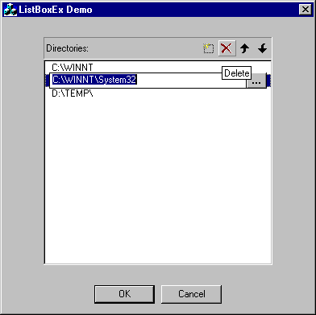

This article was contributed by Stefano Passiglia.

Environment: VC6 SP1, NT4 SP5, WIN 95/98
This article presents an extended listbox control. Its look and feel resembles
the one that you can find in the Tools->Options dialog of Visual Studio environment.
As you can see from the picture, this new listbox allows in-place item editing,
and adds also the possibility to show a "browse" button near the edit field.
Moreover, since it is derived from a drag listbox, it is also possible to reorder
items through drag and drop, or through Alt+Up/Alt+Down keys.
I also wrote a simple "buddy" class, that you can see in the upper part of the
picture, that makes the control even easier to use.
How To Use It
To use this listbox class, simply drop a normal listbox on a dialog and
associate it with a CListBoxEx class:
// This class overrides the OnBrowseButton method.
class CMyListBoxEx: public CListBoxEx
{
public:
virtual void OnBrowseButton( int iItem )
{
iItem;
CSHBrowseDlg dlgBrowse;
if ( dlgBrowse.DoModal() ) SetEditText( dlgBrowse.GetFullPath() );
};
};
class CListBoxExDemoDlg : public CDialog
{
// Construction
public:
CListBoxExDemoDlg(CWnd* pParent = NULL); // standard constructor
// Dialog Data
//{{AFX_DATA(CListBoxExDemoDlg)
enum { IDD = IDD_LISTBOXEXDEMO_DIALOG };
CMyListBoxEx m_ListBoxEx;
//}}AFX_DATA
.....
};
It's as easy as that! The OnBrowseButton() is called synchronously when the user clicks on
the "..." button. Other events that are called are OnBeginEditing() and OnEndEditing().// Add the listbox buddy m_ListBoxExBuddy.SubclassDlgItem( IDC_LISTBUDDY, this ); m_ListBoxExBuddy.SetListbox( &m_ListBoxEx );
Other improvements
I added a lot of (I think) useful methods, that add quite a bit of
functionality to the raw listbox and make it a bit more user-friendly:
// Editing & drag are anabled by default
void AllowEditing( BOOL bAllowEditing = TRUE )
{
m_bAllowEditing = bAllowEditing;
};
void AllowDrag( BOOL bAllowDrag = TRUE )
{
m_bAllowDrag = bAllowDrag;
};
// Editing methods
void BeginEditing( int iItem );
void EndEditing( BOOL fCancel );
// Add a new empty string and begin editing
void EditNew();
void SetEditStyle( DWORD dwEditStyle );
HWND GetEditHandle() const;
void SetEditText( const CString & strNewText ) const;
// Item methods
int MoveItemUp( int iItem );
int MoveItemDown( int iItem );
void SwapItems( int iFirstItem, int iSecondItem );
void SetItem( int iItem, LPCTSTR szItemText, DWORD dwItemData );
void SetItemText( int iItem, LPCTSTR szItemText );
// Virtual (overridables) events
virtual BOOL OnBeginEditing( int iItem );
virtual BOOL OnEndEditing( int iItem, BOOL fCanceled );
virtual void OnBrowseButton( int iItem );